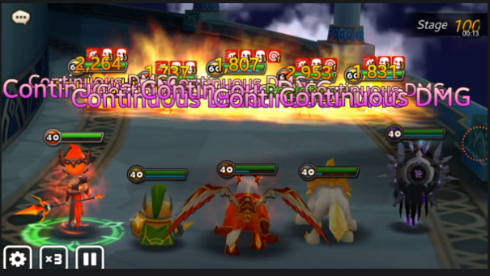

En quoi consiste le Tribunal d'Ascension ?
Le Tribunal d'Ascension est une tour composée de 100 étages qu'il faudra gravir en mode Normal ou "hard".
Chaque étage est composé de trois phases où on retrouve durant les deux premières cinq monstres (un trio et un duo de monstres).
La dernière dépendra de l'étage en question. En effet, tous les 10 étages on devra vaincre un Boss qui dépendra de la rotation de la TOA (abréviation de Trial of Ascension).
On parle de rotation étant donné qu'il y a deux Boss finaux qui s'alternent à l'étage 100 en Normal ou hard. Chaque mois, ces derniers sont inversés.
Pourquoi entamer son ascension ?
Les récompenses qu'apporte cette instance aux paliers principaux sont très intéressantes comme on peut le voir ci-dessous. On obtient en outre des cristaux tous les 5 étages, et les étages classiques nous offrent des pierres d'invocations exclusives.
Les récompenses du Tribunal
Étage 10 : 50 énergies
Étage 20 : Arcenmon 3 étoiles max
Étage 30 : 1 vélin mystique
Étage 40 : 100 cristaux
Étage 50 : 2 vélins mystiques
Étage 60 : Arcenmon 4 étoiles max
Étage 70 : 1 Devilmon
Étage 80 : 300 cristaux
Étage 90 : 1 vélin Lumière et Ténèbres
Étage 100 : 1 vélin légendaire
On prend toujours du plaisir à finir ce donjon, aussi parce que ce haut-fait est inscrit dans les archives de notre compte.
La Team "Passe Partout"
Il faut savoir que toute l'instance TOA en mode Normal peut se faire avec la même équipe, à quelques exceptions près.
Les 5 monstres clés à posséder sont :
Pour ce donjon géant, on cherche des stats assez similaires pour chacun de vos monstres, avec au moins 50% de précision sur tout ce beau monde.
Les autres prérequis à avoir sont :
180 de vitesse
22 000 PV
800 DEF
Bien évidemment, ce sont ici des valeurs indicatives strictement minimales, et qui peuvent ainsi évoluer selon le monstre et selon ce que vous avez en votre possession. Par exemple, Mav pourrait dans l'idéal être doté de 24 000 PV.
Si vous n'êtes pas en mesure de valider l'un de ces seuils de stats sur un monstre, essayez d'augmenter une autre en compensation. Par exemple, si vous avez seulement 700 de DEF, essayez d'atteindre les 25 000 PV.
